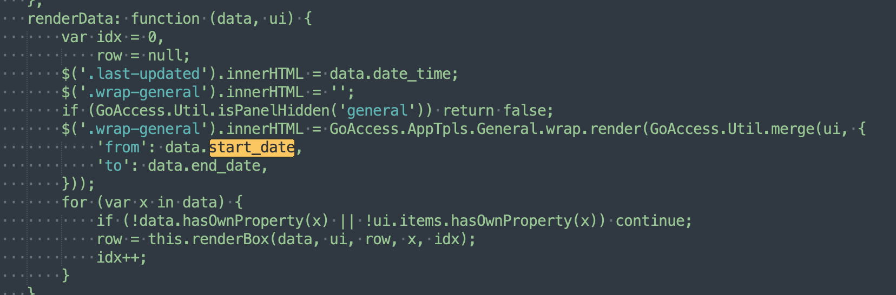

1. GoAccess日期格式化

致读者: 点击上方 “雪之梦技术驿站” → 点击右上角“ ... ”→ 点选“设为星标★ ” 加上星标，就不会找不到我啦！
偷偷溜进文章的小广告，别害羞，点进去瞅瞅，说不定能发现什么宝藏呢！文末那个也别错过，说不定是通往秘密花园的钥匙哦！
1.1. 前言
今天在查看GoAccess日志监控大屏时,发现VISITORS面板的时间格式不是常规的yyyy-MM-dd HH:mm:ss多少是有点不习惯的,作为强迫症患者还是想要统一格式化!
右上角的统计时间也是同样的格式: 31/Jul/2024 — 31/Jul/2024

每日独立访客 - 包括网络机器人
来自同一IP、时间和Http用户代理的多次点击被视作一次访问

1.2. 思路
因此,继续翻箱倒柜查看官方文档看一下有没有相关设置:
# 时间格式
--time-format <timeformat>
# 日期格式
--date-format <dateformat>
# 日期时间格式,和上述单独的选择二者选其一
--datetime-format <date_timeformat>
# 日志格式
--log-format <logformat>
默认Nginx日志配置相关配置选项如下:
time-format %H:%M:%S
date-format %d/%b/%Y
log-format %h %^[%d:%t %^] "%r" %s %b "%R" "%u"
当尝试修改date-format %d/%b/%Y为其他格式date-format %Y-%m-%d时,不仅不生效还影响了日志的解析功能!
找了一圈也没有找到相关的配置选项,只能右键检查元素,看一看能不能发现其中的渲染逻辑,结果发现了脚本中有个json_data变量存放着数据.

复制下来并格式化发现了首页右上角的起始日期:
copy(json_data)
new Date(json_data.general.start_date)
Wed Jul 31 2024 00:00:00 GMT+0800 (GMT+08:00)
经过查阅文档发现了--html-custom-js=<path.js>选项可以自定义页面js,所以接下来不知道是否可以修改start_date变量.
说干就干,简单扩展个日期格式化方法.
/**
* 格式化日期
* @param {string} [format="yyyy-MM-dd HH:mm:ss"] 可选的格式化字符串，默认为"yyyy-MM-dd HH:mm:ss"
* @return {string} 格式化后的日期字符串
*/
Date.prototype.strftime = function (format = "yyyy-MM-dd HH:mm:ss") {
var date = this;
var pad = function(n) { return n < 10 ? '0' + n : n; };
var o = {
"M+": function () { return pad(date.getMonth() + 1); }, // 月份
"d+": function () { return pad(date.getDate()); }, // 日
"H+": function () { return pad(date.getHours()); }, // 小时
"m+": function () { return pad(date.getMinutes()); }, // 分
"s+": function () { return pad(date.getSeconds()); }, // 秒
"q+": function () { return Math.floor((date.getMonth() + 3) / 3); }, // 季度
"S": function () { return date.getMilliseconds().toString().padStart(3, '0'); } // 毫秒，保留三位
};
for (var k in o) {
if (new RegExp("(" + k + ")").test(format)) {
var match = RegExp.$1;
var len = match.length;
var str = o[k]();
format = format.replace(match, len > 1 ? str : (str.length > 1 ? str.charAt(0) : str));
}
}
format = format.replace(/yyyy/g, date.getFullYear().toString());
return format;
};
最终页面加载Js的效果是远程js而不是相对路径:
<script src="https://goaccess.snowdreams1006.cn/index.js"></script>

刚开始的基本思路可能是: 修改数据->更新视图,但是转念一想这是开发项目的思路.
现在要做的的应该是hook动态劫持的思路,如果能改变格式化的方法,其余的逻辑依旧不变,那就好了!
通过搜素关键词json_data,发现了js中定义了很多的全局对象方法.

格式化js代码并经过火眼金睛的逐行排查之后,发现了格式化日期的关键代码如下:
GoAccess.Util.formatDate = function (str) {
var y = str.substr(0, 4),
m = str.substr(4, 2) - 1,
d = str.substr(6, 2),
h = str.substr(8, 2) || 0,
i = str.substr(10, 2) || 0,
s = str.substr(12, 2) || 0;
var date = new Date(y, m, d, h, i, s);
var out = ('0' + date.getDate()).slice(-2) + '/' + this.months[date.getMonth()] + '/' + date.getFullYear();
10 <= str.length && (out += ":" + h);
12 <= str.length && (out += ":" + i);
14 <= str.length && (out += ":" + s);
return out;
}
先看一下原始代码格式化效果是什么样的?

这样就能按照既定格式很容易改写成自定义格式化代码:
GoAccess.Util.formatDate = function (str) {
var y = parseInt(str.substr(0, 4), 10),
m = parseInt(str.substr(4, 2), 10) - 1, // 月份从0开始
d = parseInt(str.substr(6, 2), 10),
h = parseInt(str.substr(8, 2) || '00', 10), // 默认小时为00
i = parseInt(str.substr(10, 2) || '00', 10), // 默认分钟为00
s = parseInt(str.substr(12, 2) || '00', 10); // 默认秒为00
var date = new Date(y, m, d, h, i, s);
var out = y + '-' + ('0' + (m + 1)).slice(-2) + '-' + ('0' + d).slice(-2);
10 <= str.length && (out += ' ' + ('0' + h).slice(-2));
12 <= str.length && (out += ':' + ('0' + i).slice(-2));
14 <= str.length && (out += ':' + ('0' + s).slice(-2));
return out;
}
此时内心想法: 刚开始定义的格式化代码不能说没什么用,是一点用都没有,哈哈!
直接验证一下Js没问题!
GoAccess.Util.formatDate("2024073159")
'2024-07-31 59'
GoAccess.Util.formatDate("20240731235959")
'2024-07-31 23:59:59'
然后,上传到服务器验证是否能成功加载自定义js文件并自动覆盖原来的方法.

没想到啊!这么简单就真的就成功了,可还是有一点小瑕疵,右上角的起始时间没有格式化31/JUL/2024 — 31/JUL/2024
这个看起来就很简单,毕竟最复杂的是图标数据已经轻易解决了,随随便便处理一下应该问题不大.
根据格式化的经验得知数据驱动视图的思路是正确的,已经知道日期数据是json_data.general.start_date,因此重新格式化方法即可实时刷新永久生效.

重新逻辑很简单,刚好还能用到最新定义的日期时间格式化方法,只需改动一处核心代码:
$('.wrap-general').innerHTML = GoAccess.AppTpls.General.wrap.render(GoAccess.Util.merge(ui, {
'from': new Date(data.start_date).strftime("yyyy-MM-dd"),
'to': new Date(data.end_date).strftime("yyyy-MM-dd"),
}));
上传服务器并测试,果然奏效,结束!

1.3. 总结
本文主要介绍了GoAccess中关于日期格式化的解决问题思路,从最初遇到问题先查官方文档,发现并没有直接能够提供日期格式化的选项.
幸运的是,GoAccess提供了自定义加载远程Js/Css的选项html-custom-js.
通过分析页面源码,关键字不断搜索得到GoAccess涉及到日期格式化方法主要是GoAccess.OverallStats.renderData和GoAccess.Util.formatDate.
所以重写这两个方法即可实现自定义日期格式,包括表格数据的日期解析.
关键代码如下:
// 右上角起始日期格式化: GoAccess.OverallStats.renderData
$('.wrap-general').innerHTML = GoAccess.AppTpls.General.wrap.render(GoAccess.Util.merge(ui, {
'from': new Date(data.start_date).strftime("yyyy-MM-dd"),
'to': new Date(data.end_date).strftime("yyyy-MM-dd"),
}));
// 每日独立访客日期格式化: GoAccess.Util.formatDate
var date = new Date(y, m, d, h, i, s);
var out = y + '-' + ('0' + (m + 1)).slice(-2) + '-' + ('0' + d).slice(-2);
10 <= str.length && (out += ' ' + ('0' + h).slice(-2));
12 <= str.length && (out += ':' + ('0' + i).slice(-2));
14 <= str.length && (out += ':' + ('0' + s).slice(-2));
第一次尝试一遍记录问题,一遍解决问题,没想到还真的可以用很简单的方法解决!
如果您的任何疑问或者留言评论,也可以后台私信或者留言评论拿来即用哟~
嘿，小伙伴们，你们知道吗？这字儿可不是白码的，每一颗键帽下的汗水都能浇出一朵花来！所以，要是看得开心，就请大方地撒点阳光——评论点赞转发走一波，让我这花园更加灿烂！
1.4. 往期精彩文章
1.5. 欢迎扫码关注

欢迎扫码关注,私信回复『加群』一起交流技术
作者: 雪之梦技术驿站
来源: 雪之梦技术驿站
本文原创发布于「雪之梦技术驿站」,转载请注明出处,谢谢合作!